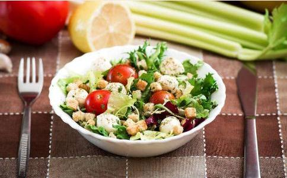

一、 大戴
回忆40年前，我们在求学年代，那时医学界，颇以为欲想提高智慧，应多磷质和纤质的食物。其科学的根据，是大脑皮层细胞缺乏磷，便影响脑力；神经缺乏磷，传达便迟钝。至于铁质缺则患贫血，发生头痛、心跳、善忘、体倦等症，这样的人，读书成绩自然低了。食品对学业关系如此密切，所有青年学生，不可不知营养常识和素食的利益。
任谁都希望自己是这世界上最有智慧的人；尤其学生，总希望一目十行，过目不忘。为了想要做超级智人，于是就得补脑补身体。中国人古老相传一个错误的观念，人体虚弱，借助肉补，又以为食肝补肝，食脑自然可以补脑了。从前科学不发达，大家都不知道猪羊牛脑中，含有胆固醇，在
素食对我们人类来说，无论是维持身体
梵纲经说：“夫食肉者，断大慈悲
现在，人人谈癌色变。抽烟会导致肺癌是家喻户晓的，但是很少有人知道肉类（尤其是烧烤的肉品）也是致癌的凶手。
根据医学研究的结果显示，一块牛排足以产生相当于六百根香烟的致癌物质。因此，如果有人以为牛排、猪排、烤肉、汉堡，营养丰富，多吃有益于身体，实在是错误的观念，简直拿自己与亲友的健康当赌注，是一件非常危险的事！
研究报告指出，肉类在烧烤时会产生一种化学物质（Melnylcholan threne）， 是严重的致癌物，试验中将此化学物质涂抹在老鼠身上，会导致骨癌、血癌、胃癌等。值得吾人特别注意的是，癌种子最易于繁殖的对象，正是偏食肉、卵、鱼类及酸性食品的患者。如果这些患者仍然大量摄取这些动物性食品，血液成了酸性，正是癌细胞的温床，癌细胞得以大肆繁殖。反之，如将血液的酸性予以控制，多吃蔬菜、水果，造成碱性血液，则癌细胞因营养失调不易繁殖，可达到抑制扩散转移的目的。这时候，再加以适当的药物治疗，癌细胞便会因为脆弱而易于扑灭。
因此，防癌不是奇迹，只要我们能实施蔬食、粗食，使血液保持适度的碱性，可怕的癌症就与我们绝缘了。
四、素食减肥，改善身材采用素食减肥，效果最为显著且能顾及健康。其关键在于植物性食物能使血液变成微碱性，使身体的新陈代谢活泼起来，藉此得以把蓄积于体内的脂肪，分解燃烧掉，达成自然减肥的效果。
而且，植物性食物只要摄取得当，调配得宜，如豆类、根茎类、叶菜类，均衡摄取，人体所需要之脂肪、蛋白质、维生素和矿物质便不会缺乏；同时，低热量的植物性食物，使人保持适当的体重，轻盈的身躯，不必担心过剩的卡路里所带来肥胖和疾病的威胁。如此，肥胖产生的腰酸背痛、懒散无力、喘气、心悸与高血压、心脏病、脑溢血等并发症，也都能一扫而空了。因此，素食减肥法百益而无害，愿天下为减肥而烦恼者，皆得清凉、健康！
五、素食是最有效的美容法 皮肤粗糙是受到体内残余毒素的侵蚀所致。我们平时吃了肉类、鱼类、蛋等动物性食物，使血液里的尿酸、乳酸量增加，这种乳酸随汗排出后，停留在皮肤表面，就会不停地侵蚀皮肤表面的细胞，使皮肤没有张力，失去弹性，而感觉到粗糙又容易产生皱纹与斑点。如果我们长期食碱性的植物性蔬果，血液中的乳酸便会大量减少，自然就不会生产有害的物质，随汗排至皮肤表面而损害皮肤的健康。同时，植物性食物中的矿物质、纤维质又能把血液中有害的物质清除。这种净化的血液，能够发挥完全的作用，于代谢过程中输送足够的养分与氧气，使全身各器官能有活力充满
好莱坞不少女明星，在她们保养秘方里总有一条：一星期里有一天禁止食用所有的肉类。她们为让血液净化，每日食物中也尽量少吃肉类，看了她们光鲜亮丽的皮肤，妇女朋友们，是不是也该试试素食美容法呢？
提倡素食的人越来越多了。有人素食，是为了